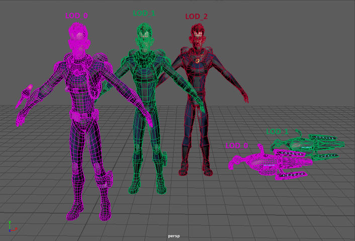

用于关联相同几何体的多个版本，以便在游戏引擎中基于特定阈值进行替换。这样使用远处和近处之间的多个版本就可以为近处生成模型的高质量版本，为远处生成模型的低质量版本。
在任意给定时间，使用 LOD 组可以轻松显示几何体的适当版本（细节级别组的一个子对象），具体取决于组与摄影机的距离或屏幕高度的百分比。
下图显示了分离的几何体，这样您就可以看到分辨率差异。通常，LOD 分组的几何体正好彼此堆栈在一起，以便从一个 LOD 级别无缝切换到下一个级别。出于测试目的，您可以将级别暂时设置为始终显示。请参见测试或预览 LOD。

LOD 的已知限制
-
“细节级别”(Level of Detail)不处理实例。创建细节级别时请仅使用非实例化几何体。（将实例化几何体添加到“细节级别”(Level of Detail)组中后，该实例化几何体将不会一致显示。）
- 不要在“细节级别”(Level of Detail)组上使用“编辑 > 解组”(Edit > Ungroup)；LOD 阈值信息不会在“撤消”(Undo)时正确重置。使用“编辑 > 细节级别 > 解组”(Edit > Level of Detail > Ungroup)可以正确解组 lodGroup 节点。
- “细节级别”(Level of Detail)不处理层次。要同时从多个网格生成较低分辨率的网格，每个选定网格必须是顶级变换的唯一子对象。例如，必须将本示例中的两个网格从组节点中移除，然后再生成 LOD 网格。